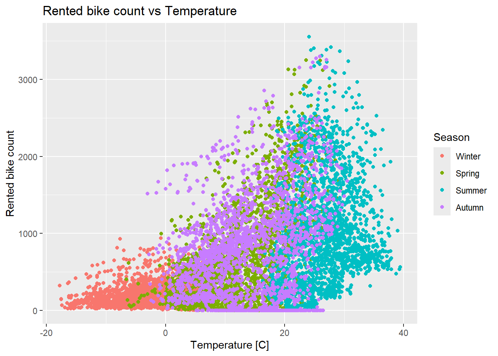
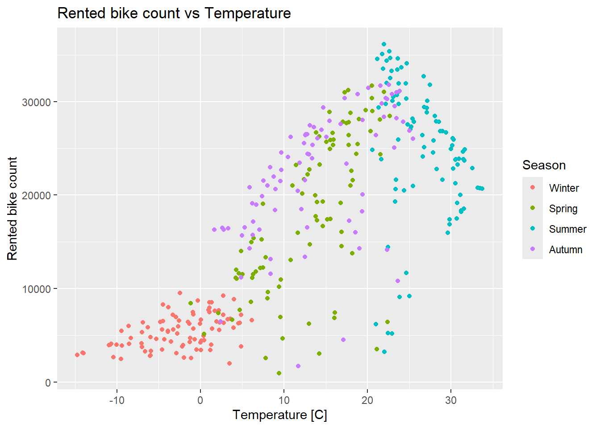

library(tidyverse)
library(janitor)
library(lubridate)
library(tidymodels)ST558_HW9_Yefrid
Reading Data
bikes_data <- read_csv("SeoulBikeData.csv",
locale = locale(encoding = "latin1")) |>
clean_names()Rows: 8760 Columns: 14
── Column specification ────────────────────────────────────────────────────────
Delimiter: ","
chr (4): Date, Seasons, Holiday, Functioning Day
dbl (10): Rented Bike Count, Hour, Temperature(°C), Humidity(%), Wind speed ...
ℹ Use `spec()` to retrieve the full column specification for this data.
ℹ Specify the column types or set `show_col_types = FALSE` to quiet this message.EDA
Now we can start with some exploratory data analysis
1. missingness
In this code we are going to check for missing values
bikes_data |>
is.na() |>
colSums() date rented_bike_count hour
0 0 0
temperature_c humidity_percent wind_speed_m_s
0 0 0
visibility_10m dew_point_temperature_c solar_radiation_mj_m2
0 0 0
rainfall_mm snowfall_cm seasons
0 0 0
holiday functioning_day
0 0 We see that there is no missing values in the data-set, we don’t have to fix anything related to missing values.
2. Checking column types
We are going to check the str() of the data-set and check the column types
str(bikes_data)spc_tbl_ [8,760 × 14] (S3: spec_tbl_df/tbl_df/tbl/data.frame)
$ date : chr [1:8760] "01/12/2017" "01/12/2017" "01/12/2017" "01/12/2017" ...
$ rented_bike_count : num [1:8760] 254 204 173 107 78 100 181 460 930 490 ...
$ hour : num [1:8760] 0 1 2 3 4 5 6 7 8 9 ...
$ temperature_c : num [1:8760] -5.2 -5.5 -6 -6.2 -6 -6.4 -6.6 -7.4 -7.6 -6.5 ...
$ humidity_percent : num [1:8760] 37 38 39 40 36 37 35 38 37 27 ...
$ wind_speed_m_s : num [1:8760] 2.2 0.8 1 0.9 2.3 1.5 1.3 0.9 1.1 0.5 ...
$ visibility_10m : num [1:8760] 2000 2000 2000 2000 2000 ...
$ dew_point_temperature_c: num [1:8760] -17.6 -17.6 -17.7 -17.6 -18.6 -18.7 -19.5 -19.3 -19.8 -22.4 ...
$ solar_radiation_mj_m2 : num [1:8760] 0 0 0 0 0 0 0 0 0.01 0.23 ...
$ rainfall_mm : num [1:8760] 0 0 0 0 0 0 0 0 0 0 ...
$ snowfall_cm : num [1:8760] 0 0 0 0 0 0 0 0 0 0 ...
$ seasons : chr [1:8760] "Winter" "Winter" "Winter" "Winter" ...
$ holiday : chr [1:8760] "No Holiday" "No Holiday" "No Holiday" "No Holiday" ...
$ functioning_day : chr [1:8760] "Yes" "Yes" "Yes" "Yes" ...
- attr(*, "spec")=
.. cols(
.. Date = col_character(),
.. `Rented Bike Count` = col_double(),
.. Hour = col_double(),
.. `Temperature(°C)` = col_double(),
.. `Humidity(%)` = col_double(),
.. `Wind speed (m/s)` = col_double(),
.. `Visibility (10m)` = col_double(),
.. `Dew point temperature(°C)` = col_double(),
.. `Solar Radiation (MJ/m2)` = col_double(),
.. `Rainfall(mm)` = col_double(),
.. `Snowfall (cm)` = col_double(),
.. Seasons = col_character(),
.. Holiday = col_character(),
.. `Functioning Day` = col_character()
.. )
- attr(*, "problems")=<externalptr> The values for date, season, holiday, and functioning_day are recognized as characters, and not as date, or factors, respectively.
3-5
bikes_data <- bikes_data |>
#Using mutate we change the columns type, for the required columns
#Names were changed at the beginning using the clean_names() function from the janitor package
mutate(date = dmy(date),
seasons = as_factor(seasons),
holiday = as_factor(holiday),
functioning_day = as_factor(functioning_day))6. Summary statistics
We are going to do summary staistics focusing mostly on the bike rental count across different categorical variables.
Summaries across holydays and no holidays.
bikes_data |>
group_by(holiday) |>
summarise(n = n(),
mean = round(mean(rented_bike_count)),
median = round(median(rented_bike_count)),
sd = sd(rented_bike_count),
min = min(rented_bike_count),
max = max(rented_bike_count))# A tibble: 2 × 7
holiday n mean median sd min max
<fct> <int> <dbl> <dbl> <dbl> <dbl> <dbl>
1 No Holiday 8328 715 524 647. 0 3556
2 Holiday 432 500 240 571. 0 2400In general more bikes are rented on no holidays rather than holidays.
Summaries across seasons
bikes_data |>
group_by(seasons) |>
summarise(n = n(),
mean = round(mean(rented_bike_count)),
median = round(median(rented_bike_count)),
sd = sd(rented_bike_count),
min = min(rented_bike_count),
max = max(rented_bike_count))# A tibble: 4 × 7
seasons n mean median sd min max
<fct> <int> <dbl> <dbl> <dbl> <dbl> <dbl>
1 Winter 2160 226 203 150. 3 937
2 Spring 2208 730 583 622. 0 3251
3 Summer 2208 1034 906 690. 9 3556
4 Autumn 2184 820 764 651. 0 3298Across seasons, the one with the highest mean bikes rented is summer, followed by autumn, spring, and lastly winter. which makes sense.
Summaries abross Functioning day
bikes_data |>
group_by(functioning_day) |>
summarise(n = n(),
mean = round(mean(rented_bike_count)),
median = round(median(rented_bike_count)),
sd = sd(rented_bike_count),
min = min(rented_bike_count),
max = max(rented_bike_count))# A tibble: 2 × 7
functioning_day n mean median sd min max
<fct> <int> <dbl> <dbl> <dbl> <dbl> <dbl>
1 Yes 8465 729 542 642. 2 3556
2 No 295 0 0 0 0 0It is clear that when the bikes rental place was not functioning, there were no bike rentals. Therefore it is necessary to exclude those values from the data-set.
Summarizing biken rentals and rainfall by season
We are checking the relationship between temperature and the number of bikes rented.
bikes_data |>
ggplot(aes(
x = temperature_c,
y = rented_bike_count,
colour = seasons
)) +
geom_point() +
labs(
title = "Rented bike count vs Temperature",
x = "Temperature [C]",
y = "Rented bike count",
colour = "Season"
)
We see that the higher amount of bikes is rented when the temperature is higher, and reaches its maximum when the temperature is around 25 Celsius.
7. Simplifying the data
Here we are going to summarize across the hours so each day has one observation, we are also going to subset for when the functioning day is YES, since otherwise the place is closed.
simple_bikes_data <- bikes_data |>
filter(functioning_day == "Yes") |>
group_by(date, seasons, holiday) |>
summarise(bike_count = sum(rented_bike_count),
rainfall = sum(rainfall_mm),
snowfall = sum(snowfall_cm),
#For the remaining weather variables we need to add the mean value per group
across(where(is.numeric),
list("mean" = ~ mean(.x)),
.names = "{.col}"),
.groups = "drop") |>
select(-c(rented_bike_count, rainfall_mm, snowfall_cm, hour))
simple_bikes_data# A tibble: 353 × 12
date seasons holiday bike_count rainfall snowfall temperature_c
<date> <fct> <fct> <dbl> <dbl> <dbl> <dbl>
1 2017-12-01 Winter No Holiday 9539 0 0 -2.45
2 2017-12-02 Winter No Holiday 8523 0 0 1.32
3 2017-12-03 Winter No Holiday 7222 4 0 4.88
4 2017-12-04 Winter No Holiday 8729 0.1 0 -0.304
5 2017-12-05 Winter No Holiday 8307 0 0 -4.46
6 2017-12-06 Winter No Holiday 6669 1.3 8.6 0.0458
7 2017-12-07 Winter No Holiday 8549 0 10.4 1.09
8 2017-12-08 Winter No Holiday 8032 0 0 -3.82
9 2017-12-09 Winter No Holiday 7233 0 0 -0.846
10 2017-12-10 Winter No Holiday 3453 4.1 32.5 1.19
# ℹ 343 more rows
# ℹ 5 more variables: humidity_percent <dbl>, wind_speed_m_s <dbl>,
# visibility_10m <dbl>, dew_point_temperature_c <dbl>,
# solar_radiation_mj_m2 <dbl>8. Recreating summary statistics
Now that we have the data simplified by day, and excluding the days when there was no rented bikes because the establishment was not functioning, we can recreate the summary statistics that were performed earlier.
We are going to do summary statistics focusing mostly on the bike rental count across different categorical variables.
Summaries across holydays and no holidays.
simple_bikes_data |>
group_by(holiday) |>
summarise(n = n(),
mean = round(mean(bike_count)),
median = round(median(bike_count)),
sd = sd(bike_count),
min = min(bike_count),
max = max(bike_count))# A tibble: 2 × 7
holiday n mean median sd min max
<fct> <int> <dbl> <dbl> <dbl> <dbl> <dbl>
1 No Holiday 336 17727 19104 9862. 977 36149
2 Holiday 17 12700 7184 10504. 2014 30498In general more bikes are rented on no holidays rather than holidays, the trend holds, how ever now that we have removed the days that there is no service, the values are more close to what the business is actually renting during operational days also during the whole day, and not per hour.
Summaries across seasons
simple_bikes_data |>
group_by(seasons) |>
summarise(n = n(),
mean = round(mean(bike_count)),
median = round(median(bike_count)),
sd = sd(bike_count),
min = min(bike_count),
max = max(bike_count))# A tibble: 4 × 7
seasons n mean median sd min max
<fct> <int> <dbl> <dbl> <dbl> <dbl> <dbl>
1 Winter 90 5413 5498 1808. 2014 9539
2 Spring 90 17910 17590 8357. 977 31681
3 Summer 92 24818 25572 7297. 3231 36149
4 Autumn 81 22099 23350 6711. 1721 31809Across seasons, the one with the highest mean bikes rented is still summer, followed by autumn, spring, and lastly winter. which makes sense since more people is free and the weather is better to go biking during the summer, and warmer days.
Summarizing biken rentals and rainfall by season
We are checking the relationship between temperature and the number of bikes rented.
simple_bikes_data |>
ggplot(aes(
x = temperature_c,
y = bike_count,
colour = seasons
)) +
geom_point() +
labs(
title = "Rented bike count vs Temperature",
x = "Temperature [C]",
y = "Rented bike count",
colour = "Season"
)
Now is easier to see that the higher amount of bikes is rented when the temperature is higher, and reaches its maximum when the temperature is around 25 Celsius.
We can also calculate the pearson correlation between the numeric variables and the bike rentals.
simple_bikes_data |>
summarise(across(
where(is.numeric) & !bike_count,
~ cor(bike_count, .x)
)
)# A tibble: 1 × 8
rainfall snowfall temperature_c humidity_percent wind_speed_m_s visibility_10m
<dbl> <dbl> <dbl> <dbl> <dbl> <dbl>
1 -0.239 -0.265 0.753 0.0359 -0.193 0.166
# ℹ 2 more variables: dew_point_temperature_c <dbl>,
# solar_radiation_mj_m2 <dbl>We can see that rainfall, snowfall and wind speed are the only weather variables that have a negative correlation with the bike rentals, but not strong.
Temperature, and solar radiation have a positive and strong correlation with the amount of bikes rented.
Splitting the data
We are going to do a 75/25 split on the data for our training and test set, stratifying it on the seasons variable.
This means the re sampling is created within the stratification variable (75% of winter, 75% of summer, etc)
set.seed(10)
bike_split <- initial_split(simple_bikes_data, prop = 0.75, strata = seasons)
bike_train <- training(bike_split)
bike_test <- testing(bike_split)
bike_train# A tibble: 263 × 12
date seasons holiday bike_count rainfall snowfall temperature_c
<date> <fct> <fct> <dbl> <dbl> <dbl> <dbl>
1 2018-09-02 Autumn No Holiday 26881 0 0 25.0
2 2018-09-03 Autumn No Holiday 10802 34.5 0 23.6
3 2018-09-04 Autumn No Holiday 29529 0 0 23.3
4 2018-09-07 Autumn No Holiday 30381 1.5 0 22.2
5 2018-09-08 Autumn No Holiday 29813 0 0 21.7
6 2018-09-09 Autumn No Holiday 28354 0 0 22.0
7 2018-09-11 Autumn No Holiday 31694 0 0 21.6
8 2018-09-13 Autumn No Holiday 30991 0 0 23.4
9 2018-09-14 Autumn No Holiday 28199 0.5 0 23.5
10 2018-09-15 Autumn No Holiday 25079 0.2 0 23.2
# ℹ 253 more rows
# ℹ 5 more variables: humidity_percent <dbl>, wind_speed_m_s <dbl>,
# visibility_10m <dbl>, dew_point_temperature_c <dbl>,
# solar_radiation_mj_m2 <dbl>Fitting MLR Models
Some previous manipulations
First we are going to add a column with the function wday() from lubridate
bike_train <- bike_train|>
#We create a column with what day of the week is, and add the label true so we get the name
mutate(day = wday(bike_train$date,
label = TRUE),
#Now we create as factor whether is a weekday or a weekend
week_day = as_factor(
if_else(day %in% c("Sat", "Sun"),
"Weekend", "Weekday")
)) |>
select(date, day, week_day, seasons, holiday, bike_count, everything())
bike_train# A tibble: 263 × 14
date day week_day seasons holiday bike_count rainfall snowfall
<date> <ord> <fct> <fct> <fct> <dbl> <dbl> <dbl>
1 2018-09-02 Sun Weekend Autumn No Holiday 26881 0 0
2 2018-09-03 Mon Weekday Autumn No Holiday 10802 34.5 0
3 2018-09-04 Tue Weekday Autumn No Holiday 29529 0 0
4 2018-09-07 Fri Weekday Autumn No Holiday 30381 1.5 0
5 2018-09-08 Sat Weekend Autumn No Holiday 29813 0 0
6 2018-09-09 Sun Weekend Autumn No Holiday 28354 0 0
7 2018-09-11 Tue Weekday Autumn No Holiday 31694 0 0
8 2018-09-13 Thu Weekday Autumn No Holiday 30991 0 0
9 2018-09-14 Fri Weekday Autumn No Holiday 28199 0.5 0
10 2018-09-15 Sat Weekend Autumn No Holiday 25079 0.2 0
# ℹ 253 more rows
# ℹ 6 more variables: temperature_c <dbl>, humidity_percent <dbl>,
# wind_speed_m_s <dbl>, visibility_10m <dbl>, dew_point_temperature_c <dbl>,
# solar_radiation_mj_m2 <dbl>Now we repeat the process for the test set
bike_test <- bike_test|>
#We create a column with what day of the week is, and add the label true so we get the name
mutate(day = wday(bike_test$date,
label = TRUE),
#Now we create as factor whether is a weekday or a weekend
week_day = as_factor(
if_else(day %in% c("Sat", "Sun"),
"Weekend", "Weekday")
)) |>
select(date, day, week_day, seasons, holiday, bike_count, everything())Now we are going to standardize the numeric predictor variables.
For that i am going to create a helper function that is going to take a reference tibble, a tibble to standardize, and the response variable.
standardrize_tibble <- function(reference, data, response){
#We get the mean from the reference tibble
ref_mean <- reference |> summarise(across(
where(is.numeric) & !{{response}},
~ mean(.x)
)
)
#We get the standard deviation from the reference tibble
ref_std <- reference |> summarise(across(
where(is.numeric) & !{{response}},
~ sd(.x)
)
)
#We get the columns for which we are going to transform
cols <- names(ref_mean)
#And finally we apply to each value of the data what the standardization
data |>
mutate(across(
all_of(cols),
~ (.x - ref_mean[[cur_column()]]) / ref_std[[cur_column()]]
))
}We test the function
bike_train_std <- standardrize_tibble(bike_train, bike_train, bike_count)
bike_train_std# A tibble: 263 × 14
date day week_day seasons holiday bike_count rainfall snowfall
<date> <ord> <fct> <fct> <fct> <dbl> <dbl> <dbl>
1 2018-09-02 Sun Weekend Autumn No Holiday 26881 -0.301 -0.212
2 2018-09-03 Mon Weekday Autumn No Holiday 10802 3.03 -0.212
3 2018-09-04 Tue Weekday Autumn No Holiday 29529 -0.301 -0.212
4 2018-09-07 Fri Weekday Autumn No Holiday 30381 -0.157 -0.212
5 2018-09-08 Sat Weekend Autumn No Holiday 29813 -0.301 -0.212
6 2018-09-09 Sun Weekend Autumn No Holiday 28354 -0.301 -0.212
7 2018-09-11 Tue Weekday Autumn No Holiday 31694 -0.301 -0.212
8 2018-09-13 Thu Weekday Autumn No Holiday 30991 -0.301 -0.212
9 2018-09-14 Fri Weekday Autumn No Holiday 28199 -0.253 -0.212
10 2018-09-15 Sat Weekend Autumn No Holiday 25079 -0.282 -0.212
# ℹ 253 more rows
# ℹ 6 more variables: temperature_c <dbl>, humidity_percent <dbl>,
# wind_speed_m_s <dbl>, visibility_10m <dbl>, dew_point_temperature_c <dbl>,
# solar_radiation_mj_m2 <dbl>and we get the test set standardize using the training set as the reference
bike_test_std <- standardrize_tibble(bike_train, bike_test, bike_count)
bike_test_std# A tibble: 90 × 14
date day week_day seasons holiday bike_count rainfall snowfall
<date> <ord> <fct> <fct> <fct> <dbl> <dbl> <dbl>
1 2017-12-02 Sat Weekend Winter No Holiday 8523 -0.301 -0.212
2 2017-12-03 Sun Weekend Winter No Holiday 7222 0.0844 -0.212
3 2017-12-17 Sun Weekend Winter No Holiday 3776 -0.301 -0.212
4 2017-12-20 Wed Weekday Winter No Holiday 4568 -0.282 4.95
5 2017-12-21 Thu Weekday Winter No Holiday 5734 -0.301 3.95
6 2017-12-26 Tue Weekday Winter No Holiday 5605 -0.301 -0.212
7 2017-12-27 Wed Weekday Winter No Holiday 5351 -0.301 -0.212
8 2018-01-06 Sat Weekend Winter No Holiday 5180 -0.301 -0.212
9 2018-01-09 Tue Weekday Winter No Holiday 5500 -0.301 0.943
10 2018-01-14 Sun Weekend Winter No Holiday 4225 -0.301 -0.212
# ℹ 80 more rows
# ℹ 6 more variables: temperature_c <dbl>, humidity_percent <dbl>,
# wind_speed_m_s <dbl>, visibility_10m <dbl>, dew_point_temperature_c <dbl>,
# solar_radiation_mj_m2 <dbl>Now we are going to fit three models
1. No interactions model
We are going to fit all numeric variables and seasons, holiday, week_day.
lm1 <- lm(bike_count ~ seasons + holiday + week_day + rainfall + snowfall + temperature_c + humidity_percent + wind_speed_m_s + visibility_10m + dew_point_temperature_c + solar_radiation_mj_m2,
data = bike_train_std)2. Some interactions model
This model will include some interactions terms which are defines using the : between the variables that we want the interaction term
lm2 <- lm(bike_count ~ seasons + holiday + week_day + rainfall + snowfall + temperature_c + humidity_percent + wind_speed_m_s + visibility_10m + dew_point_temperature_c + solar_radiation_mj_m2 + seasons:holiday + seasons:temperature_c + temperature_c:rainfall,
data = bike_train_std)3. With quadratic terms linear model
This model will include all the terms from the lm2 and some quadratic terms
lm3 <- lm(bike_count ~ seasons + holiday + week_day + rainfall + snowfall + temperature_c + humidity_percent + wind_speed_m_s + visibility_10m + dew_point_temperature_c + solar_radiation_mj_m2 + seasons:holiday + seasons:temperature_c + temperature_c:rainfall + I(temperature_c^2) + I(humidity_percent^2),
data = bike_train_std)Model selection
Using RMSE as the metric to select the model, we are going to calculate the RMSE for each model now using the test set which was standardized.
#For the simplest model
rmse_vec(bike_test_std$bike_count, predict(lm1, newdata = bike_test_std))[1] 3530.921#For the model including interaction terms
rmse_vec(bike_test_std$bike_count, predict(lm2, newdata = bike_test_std))[1] 3128.248#For the model including interaction and quadratic terms
rmse_vec(bike_test_std$bike_count, predict(lm3, newdata = bike_test_std))[1] 3133.055Now that we know that the model that include interaction terms, but not the quadratic terms is the one that minimizes our metric, we proceed to fit that model to the entire data-set.
Fitting to the entire data-set
First we add the variable week_day, and use our helper function to standardize the data.
simple_bikes_data <- simple_bikes_data|>
#We create a column with what day of the week is, and add the label true so we get the name
mutate(day = wday(simple_bikes_data$date,
label = TRUE),
#Now we create as factor whether is a weekday or a weekend
week_day = as_factor(
if_else(day %in% c("Sat", "Sun"),
"Weekend", "Weekday")
)) |>
select(date, day, week_day, seasons, holiday, bike_count, everything())
#And we standardize
simple_bikes_data_std <- standardrize_tibble(simple_bikes_data,
simple_bikes_data,
bike_count)
simple_bikes_data_std# A tibble: 353 × 14
date day week_day seasons holiday bike_count rainfall snowfall
<date> <ord> <fct> <fct> <fct> <dbl> <dbl> <dbl>
1 2017-12-01 Fri Weekday Winter No Holiday 9539 -0.303 -0.212
2 2017-12-02 Sat Weekend Winter No Holiday 8523 -0.303 -0.212
3 2017-12-03 Sun Weekend Winter No Holiday 7222 0.0360 -0.212
4 2017-12-04 Mon Weekday Winter No Holiday 8729 -0.295 -0.212
5 2017-12-05 Tue Weekday Winter No Holiday 8307 -0.303 -0.212
6 2017-12-06 Wed Weekday Winter No Holiday 6669 -0.193 0.765
7 2017-12-07 Thu Weekday Winter No Holiday 8549 -0.303 0.970
8 2017-12-08 Fri Weekday Winter No Holiday 8032 -0.303 -0.212
9 2017-12-09 Sat Weekend Winter No Holiday 7233 -0.303 -0.212
10 2017-12-10 Sun Weekend Winter No Holiday 3453 0.0445 3.48
# ℹ 343 more rows
# ℹ 6 more variables: temperature_c <dbl>, humidity_percent <dbl>,
# wind_speed_m_s <dbl>, visibility_10m <dbl>, dew_point_temperature_c <dbl>,
# solar_radiation_mj_m2 <dbl>Now we fit the model
bikes_model <- lm(bike_count ~ seasons + holiday + week_day + rainfall + snowfall + temperature_c + humidity_percent + wind_speed_m_s + visibility_10m + dew_point_temperature_c + solar_radiation_mj_m2 + seasons:holiday + seasons:temperature_c + temperature_c:rainfall,
data = simple_bikes_data_std)The coefficients for the final fitted model are:
coef(bikes_model) (Intercept) seasonsSpring
14267.0933 3566.8945
seasonsSummer seasonsAutumn
24089.6723 8445.4780
holidayHoliday week_dayWeekend
-2482.3740 -2321.7038
rainfall snowfall
-2344.7995 -170.3485
temperature_c humidity_percent
-3345.9528 -2925.8734
wind_speed_m_s visibility_10m
-478.9503 167.7336
dew_point_temperature_c solar_radiation_mj_m2
8994.5967 3286.8767
seasonsSpring:holidayHoliday seasonsSummer:holidayHoliday
-486.3559 -1241.4111
seasonsAutumn:holidayHoliday seasonsSpring:temperature_c
-2533.7462 5810.3377
seasonsSummer:temperature_c seasonsAutumn:temperature_c
-16437.1317 755.1618
rainfall:temperature_c
-531.1484